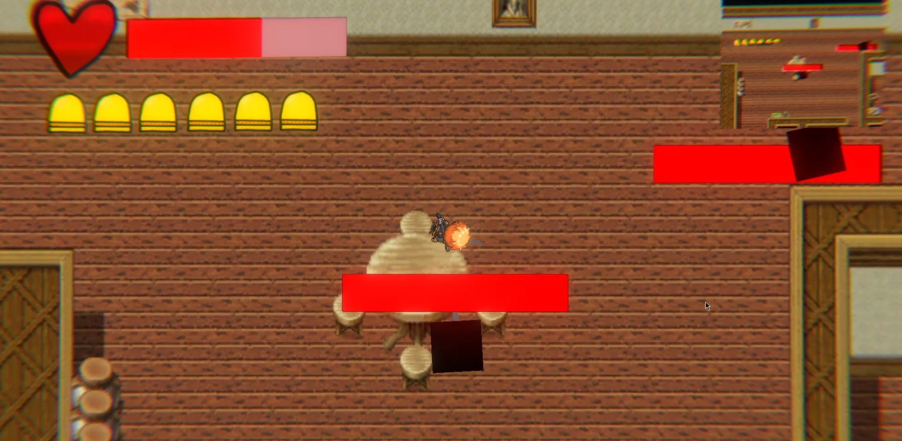

Description:
August 15th 1875:
It had been 500 years since Tim Zumor has been on a mission.
His mission was to wipe out the Volorum family, but when Tim heard a gang was nearby that was named: The Sheriff Volorum Gang. With his bloodthirst he ventured out to seek and kill them.
But the Volorum family has a secret curse for themselves to carry. What is that curse? Will Tim discover what the curse is?


This game was an concept I had thought off, that didn't work out in the end, maybe sooner or later, I will get back into it, and actually try to finish the game into an finished product, because this has alot of promise.